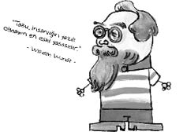

Wilhelm Wundt (1832-1920)
Çocukluğu yalnızlık içinde geçen Wundt’un tek arkadaşı zihinsel özürlü bir çocuktu. Psikolog olmasında bu arkadaşın ne kadar etkisi vardır bilinmez. Wundt’un ailesi çok zeki kişilerden oluşur ama Wundt’un dersleri çok zayıftır hatta bu yüzden bir gün babasından tokat bile yemiştir. Öğretmenleri tarafından da tokat manyağı yapılan Wundt yıllar sonra dönüp, “Hani bir zamanlar tembel ama zeki bir çocuk vardı, işte şimdi bir profesör olarak karşınızda duruyor.” diyerek geçmişinden intikamını almıştır.
Yapısalcılık ekolünün kurucusu sayılan Wundt, ilk psikoloji laboratuarını kurarak psikolojiyi bağımsız bir bilim hâline getirmiş ve deneysel psikolojinin temelini atmıştır. Daha sonra kimya bilimine özenerek, “Onlar nasıl birleşikleri çözümlüyorsa ben de bilinci çözümlerim.” demiş, “Yapma etme bilinç hiç parçalanır mı?” itirazlarına aldırmayarak “Laboratuarı kurduk evelallah çözümleme işini de hallederiz.” diyerek bilinci çözümlemeye çalışıp zihnin en yalın öğelerini arayıp durmuştur. Böylece duyumlar, algılar ve anılar laboratuarda incelenmeye başlanmıştır. Fakat ne yazık ki Wundt’un tüm yayınlarının bulunduğu laboratuar, İkinci Dünya Savaşı’nda yıkılmış ve “Wundtçu” psikolojinin yapısı, içeriği, şekli, sonsuza dek kaybolmuştur.
Ayrıca, ağzının tadını bilen Wundt dört temel tat olan acı, tatlı, ekşi ve tuzluya iki temel tat daha eklemiş, “Ağız tadımızı sınırlayamazsınız.” söylemiyle yenilikçi tarzını bir kere daha ortaya koymuştur.
